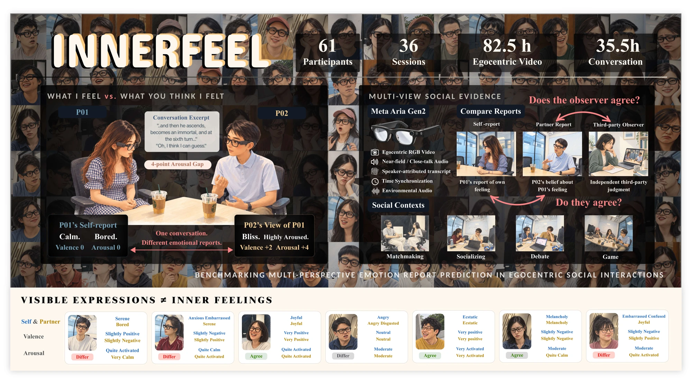

HippoCamp: Benchmarking Contextual Agents on Personal Computers
Can an agent make sense of a life’s worth of files? A device-scale benchmark with 2,000+ real files, 581 questions, and step-wise failure diagnosis.
FIRST AUTHOR · RESEARCH LEAD
Robots and agents
for
everyday life.
I work on versatile robots and multimodal agents, focusing on long-horizon tasks through policy learning, memory, and realistic evaluation.
M.Sc. in AI · NTU MMLabEmbodied AI Intern · SenseTime

Drag to turn. Say hi to make a friend.
 hello from Singapore ☀
hello from Singapore ☀
A LITTLE ABOUT ME
I’m a master’s student in Artificial Intelligence at Nanyang Technological University, working with Prof. Chen Change Loy and Prof. Ziwei Liu at MMLab. I also work on embodied AI at SenseTime.
My work connects memory, policy learning, and realistic evaluation—from personal computers to simulated homes and real robots. Previously, I graduated with First Class Honours from CUHK and worked with Prof. Michael R. Lyu on LLM memorization and privacy.
PAPERS & BENCHMARKS
Memory, reasoning, and learning to act in the world.
Can an agent make sense of a life’s worth of files? A device-scale benchmark with 2,000+ real files, 581 questions, and step-wise failure diagnosis.
FIRST AUTHOR · RESEARCH LEAD

Probing embodied competence and practical limitations, then asking what a next-generation benchmark should measure in a world that keeps moving.
CO-FIRST AUTHOR · BENCHMARK PROTOTYPE & BEHAVIOR-1K

Understanding why and how people use tools: 100 hours of egocentric video and a 1,000-question diagnostic benchmark.
DATA COLLECTION · ANNOTATION PLATFORM & CURATION

Studying emotion understanding as per-user belief tracking, with memory isolation and evaluation across different perspectives.
RESEARCH FRAMING · EVALUATION DESIGN · VISUALIZATION
Manuscript under review · Public link to follow.

Grounding personalized memory in what people do with their files, through a simulation engine, diagnostic benchmark, and memory architecture.
DATA ADAPTATION · BEHAVIOR SIMULATION ENGINE
Investigating how tokenization turns high-character-entropy secrets into predictable token sequences, and why this increases leakage risks.
A shift from instance-level to set-level entropy uncovers a near-linear relationship between data compressibility and LLM memorization.
UNDERGRADUATE THESIS · PIPELINE LEAD
Using relation-aware prompts to improve document-level event extraction.
* Equal contribution.
WORK IN PROGRESS
Drag to turn · slide to replay
A playful illustration, not a research demo.
01 MEMORY
Connecting what a robot remembers to what it does next.
I assist in designing dual memory, co-develop RMBench++, and build the real-robot pipeline for data acquisition, model deployment, and robot control.
With Dr. Zhonghua Wu
02 ACTION
Taking learned actions to real robots.
I integrated register-token latent actions into π0.5 and ran closed-loop manipulation evaluation in RoboTwin.
With Dr. Qingyi Tao
EXPERIENCE & EDUCATION
Algorithm Intern · Embodied AI
SingaporeCore contributor to the GPT-6-Astra technical report, including the benchmark prototype and BEHAVIOR-1K evaluation. Current projects study memory for world action models and native latent action models.
M.Sc. in Artificial Intelligence · GPA 5.0 / 5.0
MMLab · Chen Change Loy & Ziwei LiuMMLab@NTU, advised by Prof. Chen Change Loy and Prof. Ziwei Liu. Research on versatile robots and multimodal agents for everyday tasks.
Undergraduate thesis · LLM Memorization & Privacy
Advised by Michael R. LyuUndergraduate thesis research on the relationship between entropy and LLM memorization, including a 400K+ sample inference pipeline and investigation of code-secret leakage.
Algorithm Intern
Knowledge graphs & question answeringBuilt an automated data collection framework, fine-tuned OneKE for unstructured data parsing, and developed a Neo4j-based question-answering backend.
B.Sc. in Computer Science · First Class Honours
Major GPA 3.80 / 4.0B.Sc. in Computer Science, First Class Honours. Major GPA: 3.80/4.0. Dean’s List on four occasions.